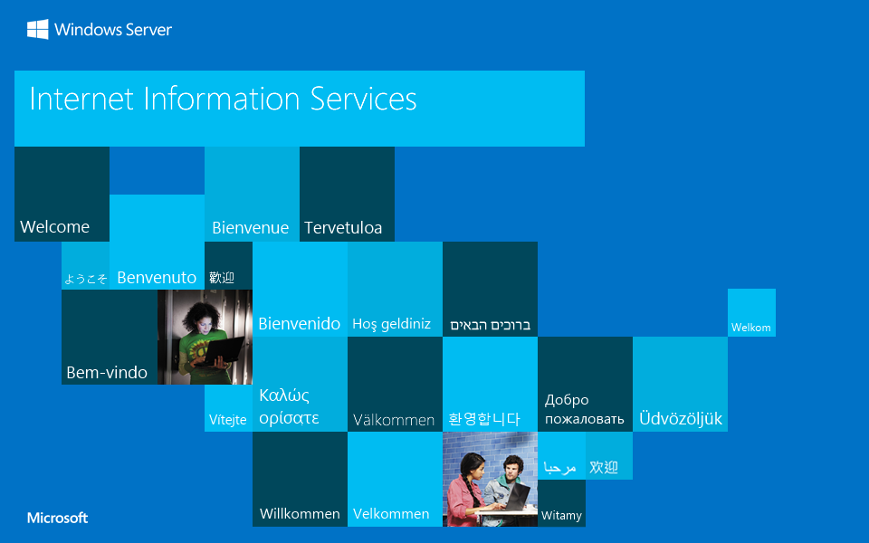

<style type="text/css">
<!--
body {
	color:#000000;
	background-color:#0072C6;
	margin:0;
}
#container {
	margin-left:auto;
	margin-right:auto;
	text-align:center;
	}
a img {
	border:none;
}

-->

<a href="http://go.microsoft.com/fwlink/?linkid=66138&amp;clcid=0x409"></a>
<div id="post-info">
	<p id="404" style="text-align: center; color: #fff; opacity: .75; font-weight: bold;">404</p>
</div>
<div id="nav-icon" style="bottom: 50px;">
	<a href="{{ site.url }}{{ site.baseurl }}"><span class="genericon genericon-home"></span></a>
</div>
<script type="text/javascript">jQuery("#404").fitText(0.18, { maxFontSize: '350px' })</script>
